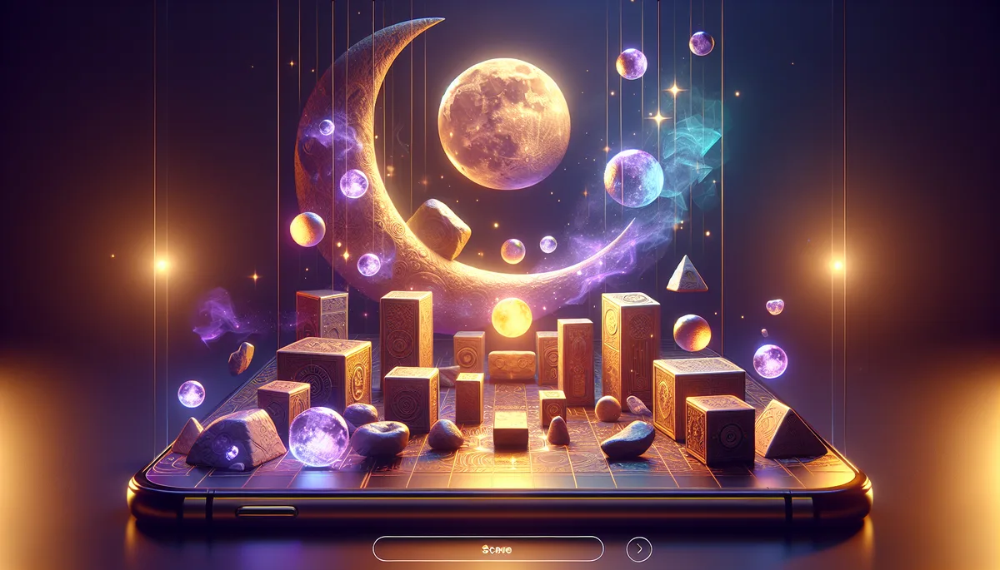

三千年前的人用它問天，現在你用手機就能問。不是迷信，是一種跟自己對話的方式。
擲筊源自殷商龜甲卜筮，三千年來是台灣人跟天對話的方式。從廟宇的香火繚繞到你手中的螢幕，變的是媒介，不變的是那份想要被聽見的心。
每一對筊杯都有兩面，一面平（陽），一面凸（陰）。《易經》說「一陰一陽之謂道」，筊杯就是這個道理最直覺的體現。陰與陽的組合，就是天地給你的回應。
問事小提醒：心中默想具體的問題（是非題最好），保持誠敬的心，一個問題一次擲。問得越清楚，天聽得越明白。
覺察到了什麼，就用行動回應它